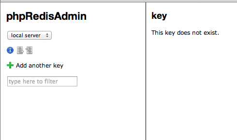

通常 Redis 開發，大多都是開啟 Redis 的 Client 後，進去下指令查詢的，不過為了快速一點，最近找到一套不錯又有熟悉感的工具！ 就是 phpRedisAdmin ！ 基本上在 Mac OS 上只要有 apache、php 就可開啦！
使用 phpRedisAdmin 前，請先確認是否已經安裝 Redis。
終端機移至 DocumentRoot(根目錄) 內，並下指令。
把 phpRedisAdmin clone 下來，指令: git clone https://github.com/ErikDubbelboer/phpRedisAdmin.git
進入資料夾，指令: cd phpRedisAdmin
在 clone predis 即可，指令: git clone https://github.com/nrk/predis.git vendor
設定連線位置、port。
./phpRedisAdmin/includes/config.sample.inc.php，依需求設定內容。開啓網頁 http://127.0.0.1/phpRedisAdmin/ 
通常 Redis 的 port 是 6379，所以 config.sample.inc.php 可以稍微注意一下！